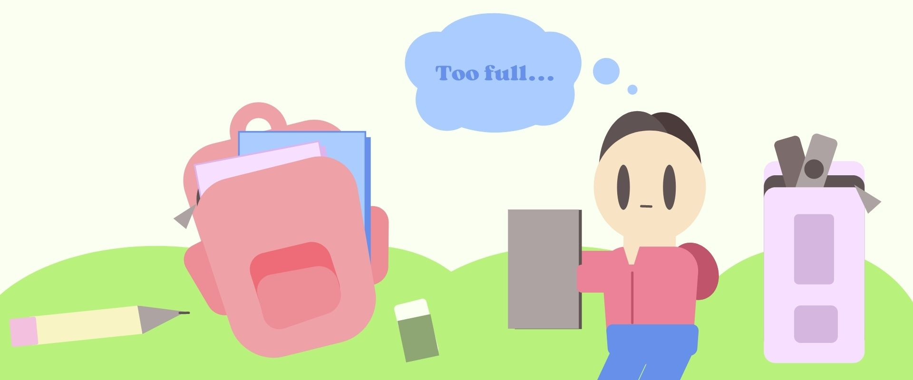

Smart Back–Packing strives to make you feel prepared to work and feel your best. Thus‚ having all the stationery utensils you need to succeed is crucial. Nevertheless‚ according to an article written by Larissa Hirsch‚ MD‚ on Nemours Kids Health‚ heavy backpacks correlate with head‚ neck‚ back‚ and shoulder pains. Moreover‚ they increase the risk of falling backward and sustaining related injuries‚ such as bruising. For many students‚ unnecessary stationery items‚ such as bulky binders or large scissors‚ add excessive weight to their backpacks. To solve this issue‚ we must choose efficient stationery items that both take up less space and work effectively.
Below‚ I have compiled some of the best efficient alternatives to traditional stationery‚ entirely based on personal experience: Glue Tape‚ Mini Stapler‚ Pen-like Scissors‚ Plastic Eraser‚ Mechanical Pencil‚ Word Cards‚ Folders‚ and Refillable Notebooks.
Glue Tape is a rolling adhesive that acts as a compact‚ mess–free alternative to traditional Glue Sticks. Often‚ Glue Sticks are bulky‚ leaving a slimy residue and drying out easily. While Glue Tape comes in many shapes and sizes‚ they are usually smaller than Glue Sticks‚ freeing up room for other stationery items. Moreover‚ the adhesive is similar to those in tape rolls‚ lasting a long time. Additionally‚ Glue Tape’s roll–on structure prevents it from sticking to unwanted areas.
Purchase Glue Tape?
As the name suggests‚ Mini Staplers are the compact version of our most beloved office supply: the Stapler. While the prevalence of their older sibling‚ the Stapler‚ may make Mini Staplers seem unnecessary‚ having one on hand can be helpful in several instances. For example‚ some teachers do not allow students to use classroom staplers for unrelated tasks‚ such as putting notes together. Additionally‚ a personal Mini Stapler can come in handy if the communal Stapler breaks down or runs out of staples.
Purchase the Mini Stapler?
Pen–like Scissors are slender cutting tools enclosed with a capping mechanism. While traditional Scissors‚ or even School Scissors‚ are too big to fit in a pencil case‚ Pen–like Scissors take up roughly the amount of space of a Crayola marker. Moreover‚ as more schools shift schoolwork to online platforms‚ scissors are less available for unexpected tasks like cutting a snagged thread. Additionally‚ their capping mechanism make Pen–like Scissors safer to carry around than other cutting tools.
Purchase Pen-like Scissors?
Made from soft vinyl‚ Plastic Erasers are among the most effective tools for erasing. We all know the feeling of spending what feels like hours frantically scratching poorly–performing Rubber Erasers across a test question before the teacher declares‚ ‘Pencils down.’. Fortunately‚ Plastic Erasers can thoroughly erase marks made by many different writing tools‚ including pen ink.
Purchase the Plastic Eraser?
A Mechanical Pencil is a writing utensil releasing Lead pieces when a pushing force is applied to its mechanism. While traditional pencil Lead becomes flat with use‚ Mechanical Pencil Lead remains the same thickness throughout. Moreover‚ traditional Pencils bear the hassle of carrying bulky Pencil Sharpeners‚ whereas Mechanical Pencil Lead refills come in slim packages. Additionally‚ Mechanical Pencil Leads can be easily switched for many different colours‚ pigments‚ and more.
Purchase the Mechanical Pencil?
Word Cards are flashcards joined together using a metal hoop. While traditional flashcards are needlessly large‚ Word Cards are rather small‚ designed for day–to–day use‚ such as on the bus or in a hallway. Moreover‚ traditional flashcards get lost easily‚ whereas the hoop mechanism of Word Cards keeps them intact. Additionally‚ you can easily refill or discard old flashcards in Word Cards by simply pushing the hoop apart.
Purchase Word Cards?
While many students rely on bulky binders to store loose papers‚ folders serve the same purpose with a far lighter weight load. Moreover‚ folders allow quick access to important papers‚ whereas binders force you to unhook their metal rings. Additionally‚ folders prevent the unwanted creasing that binders often inflict on paper.
Purchase the Folder?
While most students use binders and notebooks separately‚ Refillable Notebooks use an effortless pull–to–unlock mechanism to give you the best of both worlds. Often‚ binders are needlessly bulky‚ taking up most of the space in a backpack. In contrast‚ you can easily control the weight of your Refillable Notebooks by adding or removing paper according to preference. Meanwhile‚ wire–ring notebooks are incredibly wasteful as they have no purpose once their pages are filled. Refillable Notebooks are considerably more eco–friendly as you can stock them with organic paper and will only throw away used sheets.
Purchase the Refillable Notebook?
Return to the top of the page?